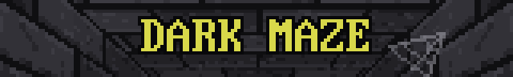
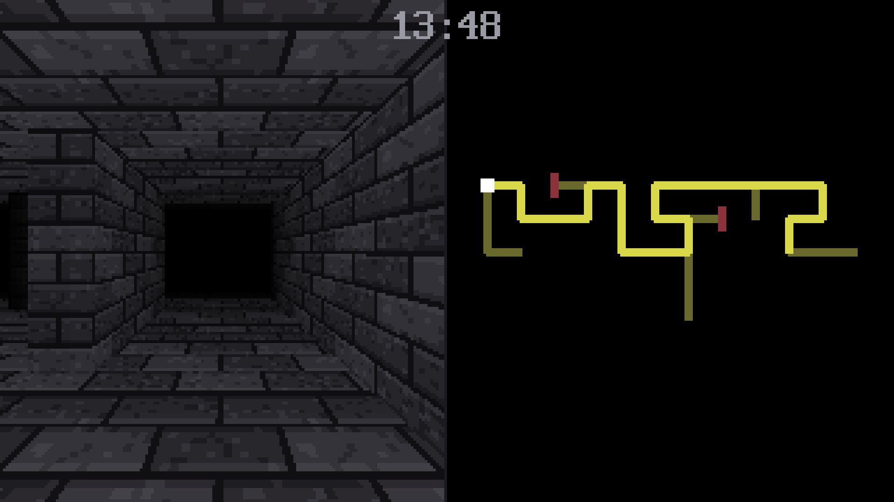
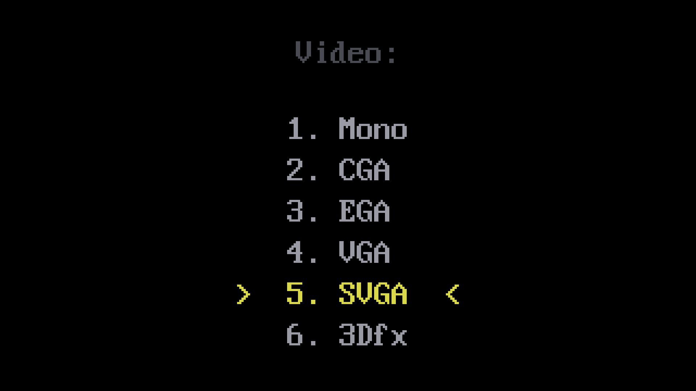
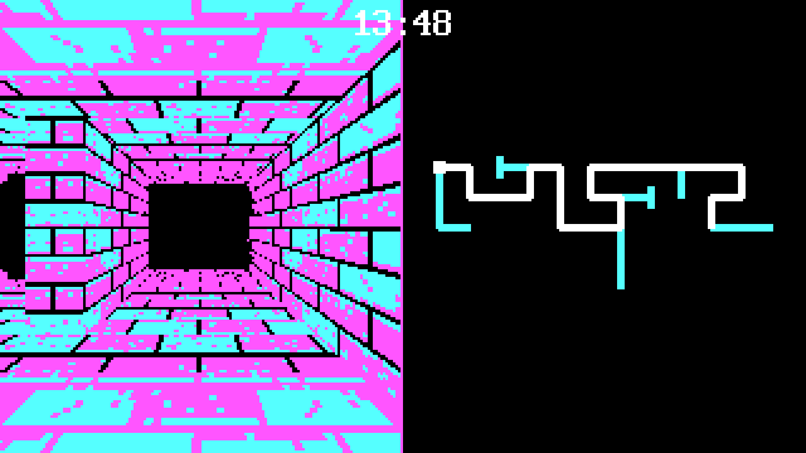
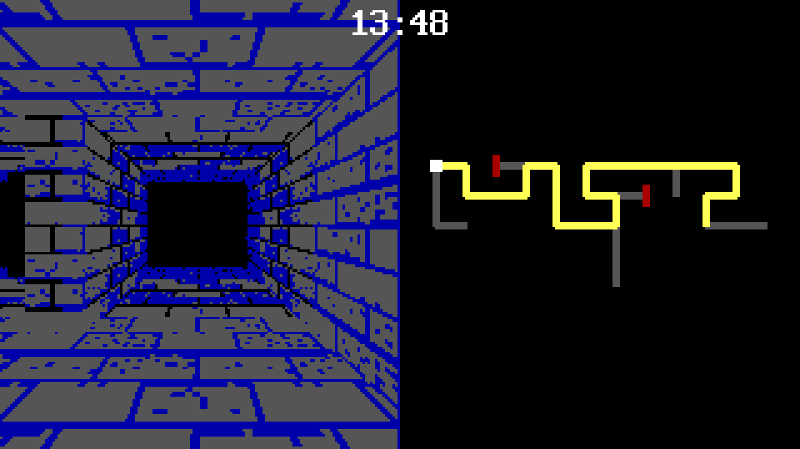
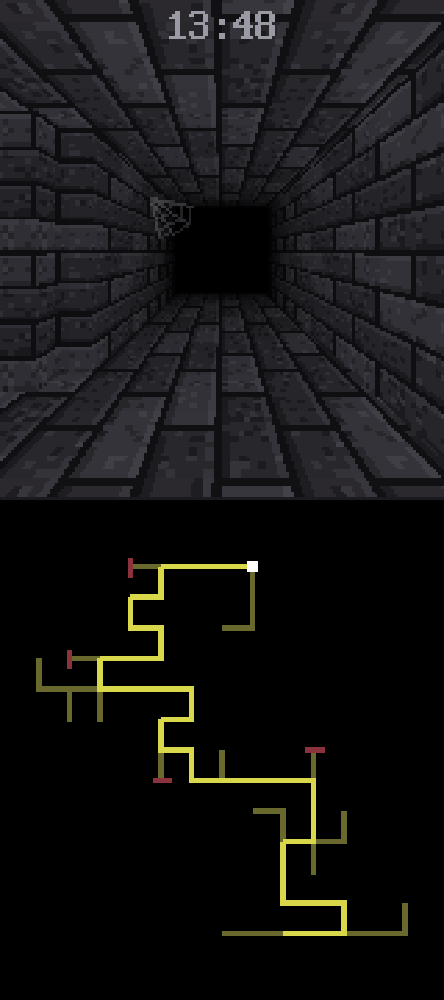
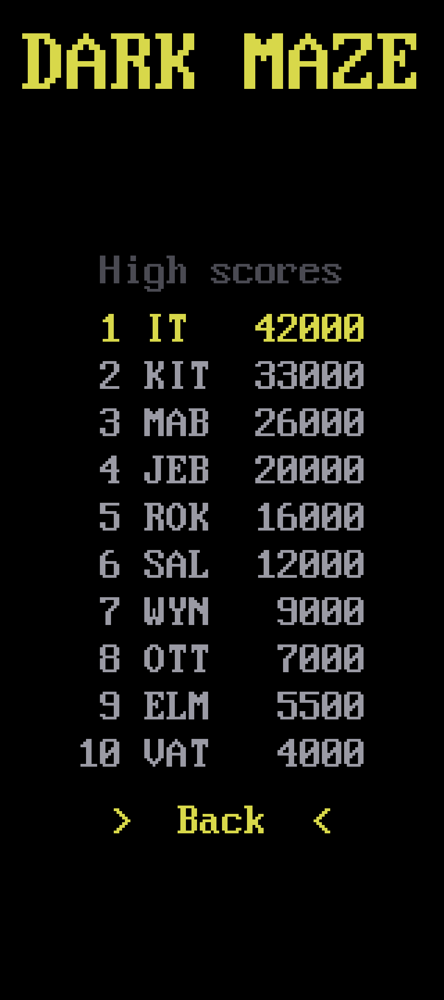
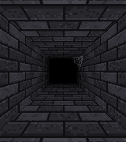

Dark stone in every direction. The way out is in here somewhere.
Listen, hero. Here is the job.
There is an artefact at the top of the wizard's tower. Very powerful. Take it.
You should know the tower is larger inside than out. Magic, presumably. That is the wizards' business.
The night is short. Be quick — whatever you mean to do in there, do it before the sun comes up.
Others went in before you. They are still in there, one way or another.
Maybe they got lost. Maybe it was something else. Be careful.
A first-person maze in the dark.
Stone walls, close on either side. Enough light to see a step or two ahead, and past that nothing at all. Every passage looks like the one before it, and the map draws only where you have already been.
Several possible endings. Only one of them is good.
Contains sudden loud sounds, jump scares and sharp changes from dark to bright.






These shots are here to show what the game is — not all of it. The spoilers and the secrets are yours to find. And no screenshot carries sound: the maze is dark, but it is not silent.

A corridor, a junction, and the map filling in behind — the portrait view, as a phone held upright shows it.
I grew up on DOS games, and I have tried to get as much of that era into this one as I could.
You pick your video mode before anything starts — Mono, CGA, EGA, VGA, SVGA. And 3Dfx, if you are lucky enough to have one! A game that explains nothing and trusts you to work it out. Three letters on a high score table. Every bit of it on purpose.
I am one person making this. Any kind of thank you, and any suggestion for improving it, would mean a great deal.
I hope you enjoy it.
Not released yet. When it is, the links to buy and play it appear here.
Version 1.0.0. More to come.